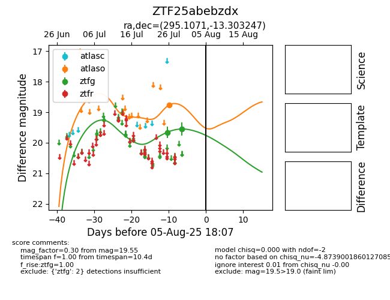

Target ZTF25abebzdx at 2025-08-05 18:07, see:
FINK: fink-portal.org/ZTF25abebzdx
Lasair: lasair-ztf.lsst.ac.uk/objects/ZTF25abebzdx
ALeRCE: alerce.online/object/ZTF25abebzdx
alt names
ZTF25abebzdx (ztf,fink)
coordinates:
equatorial (ra, dec) = (295.1071,-13.30325)
galactic (l, b) = (26.2952,-16.77762)
photometry
last atlaso=18.76, ztfg=19.55
1 atlaso, 2 ztfg detections
